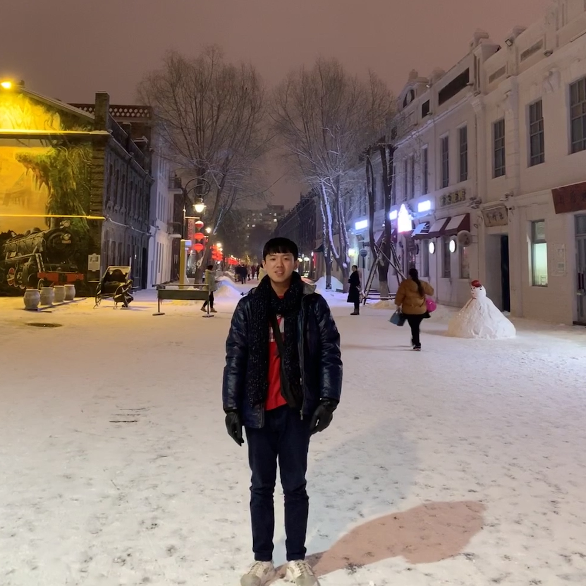
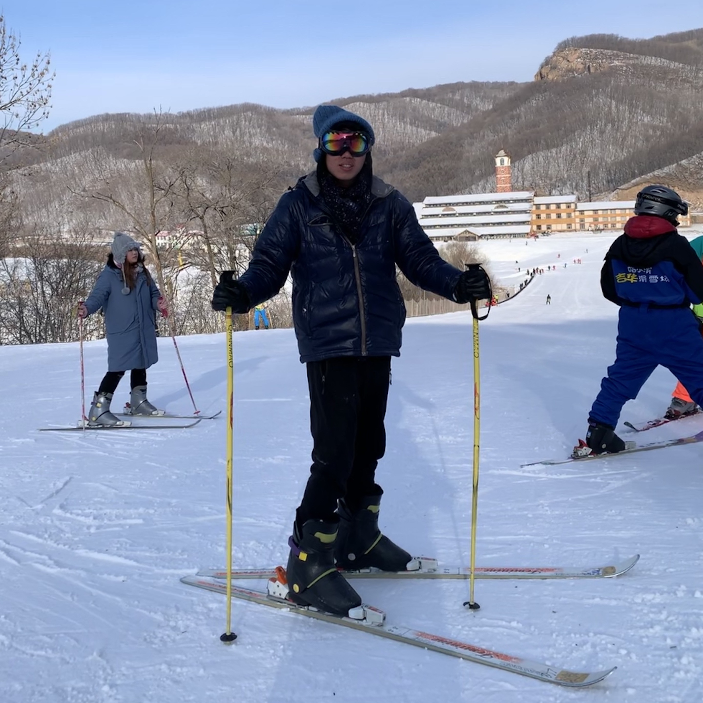
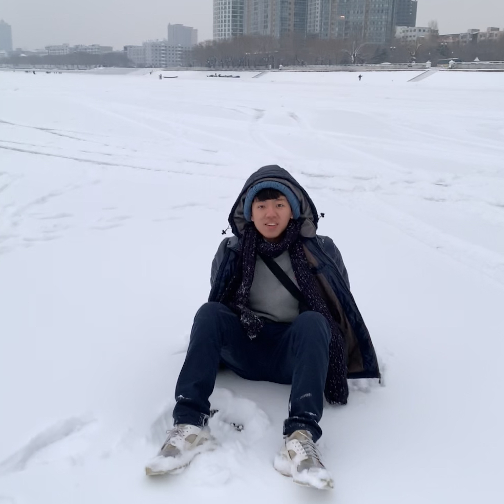
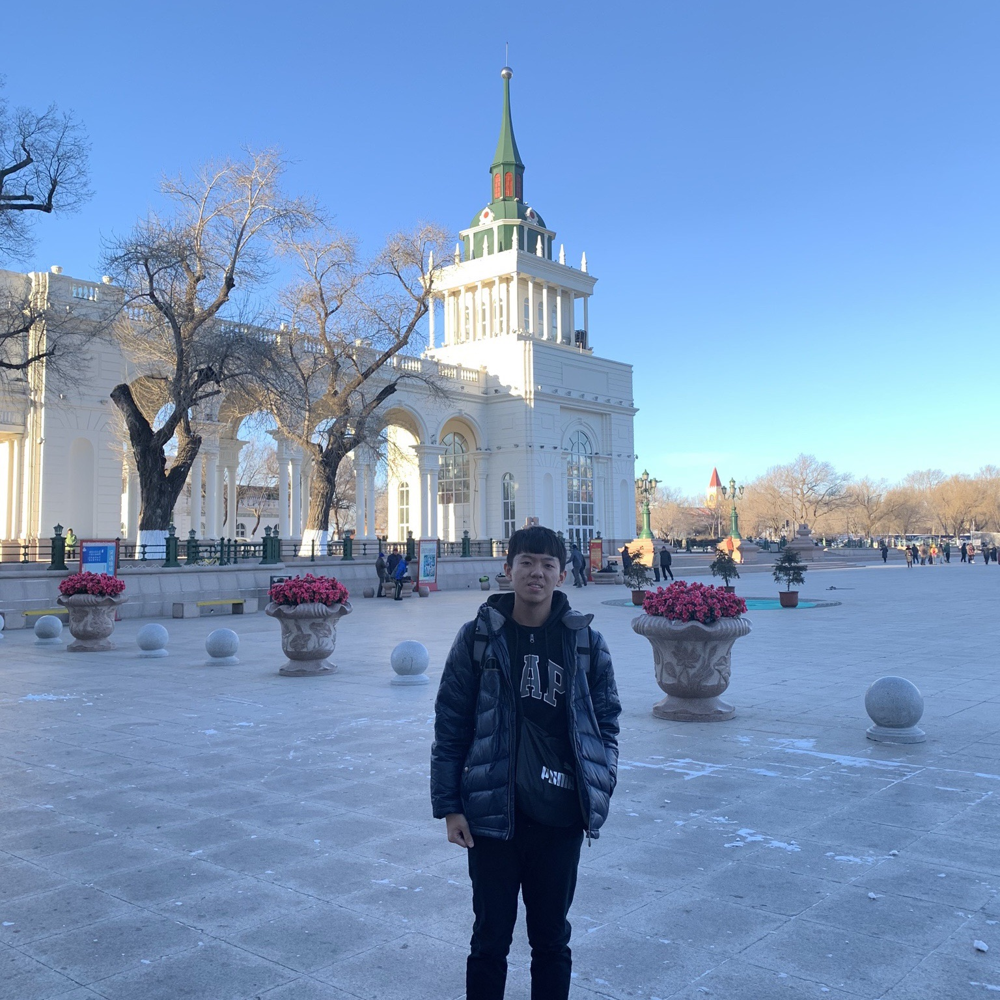
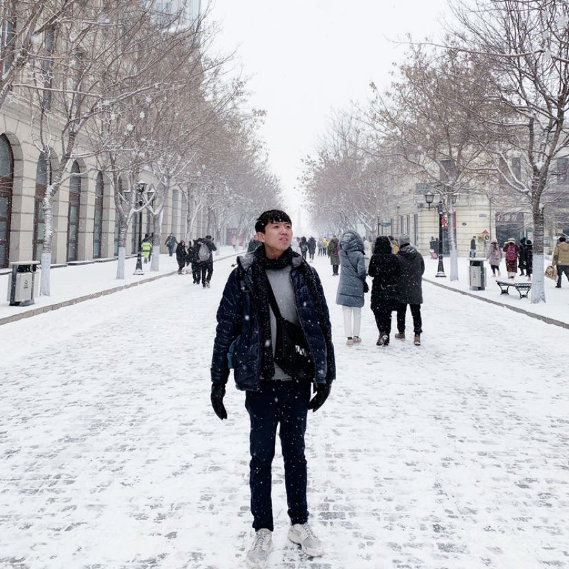
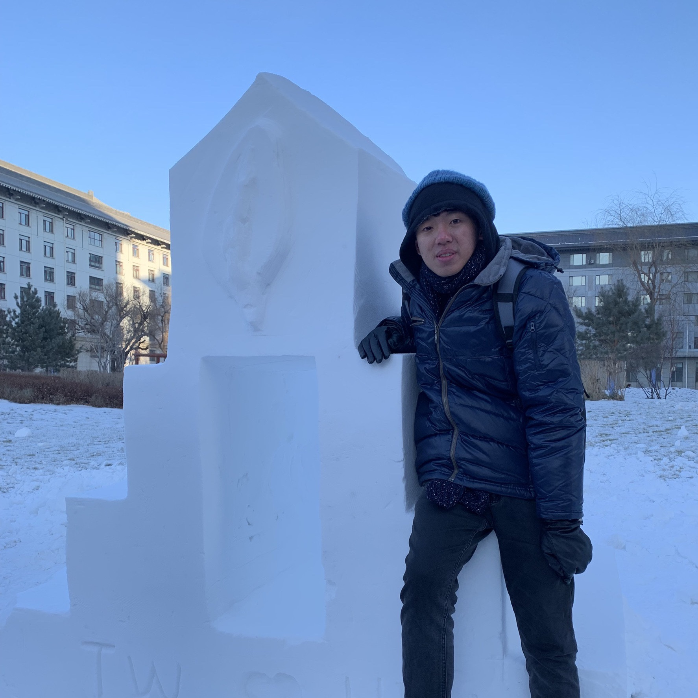
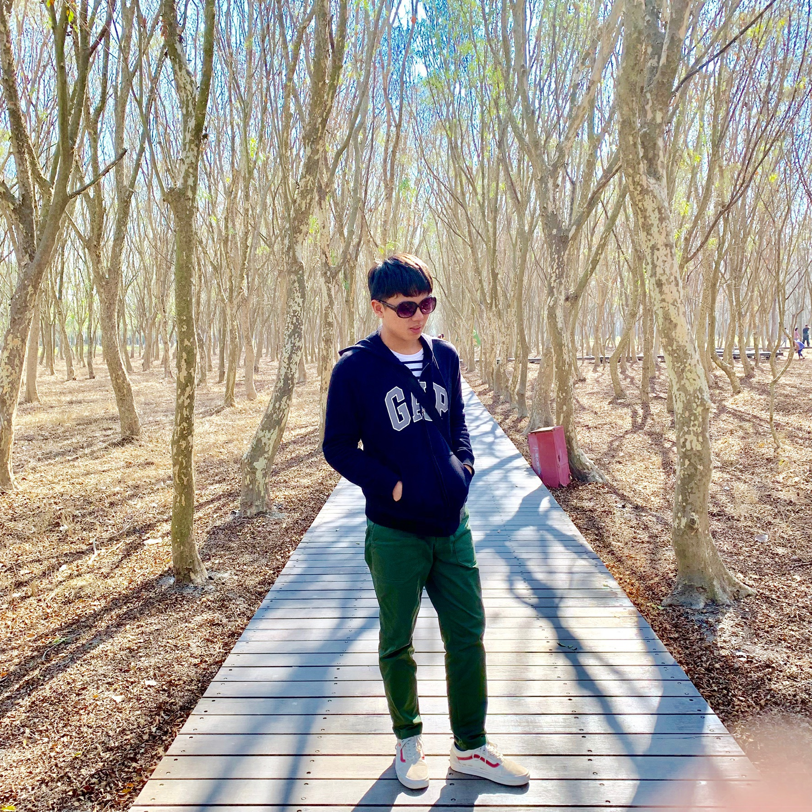
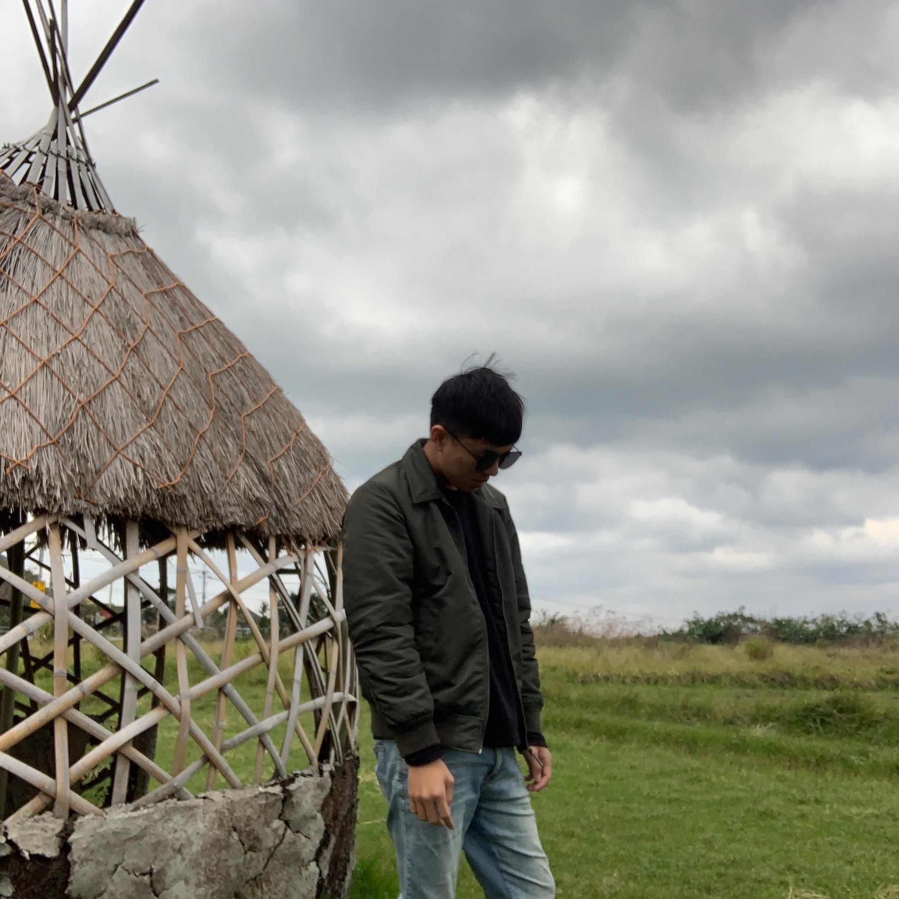
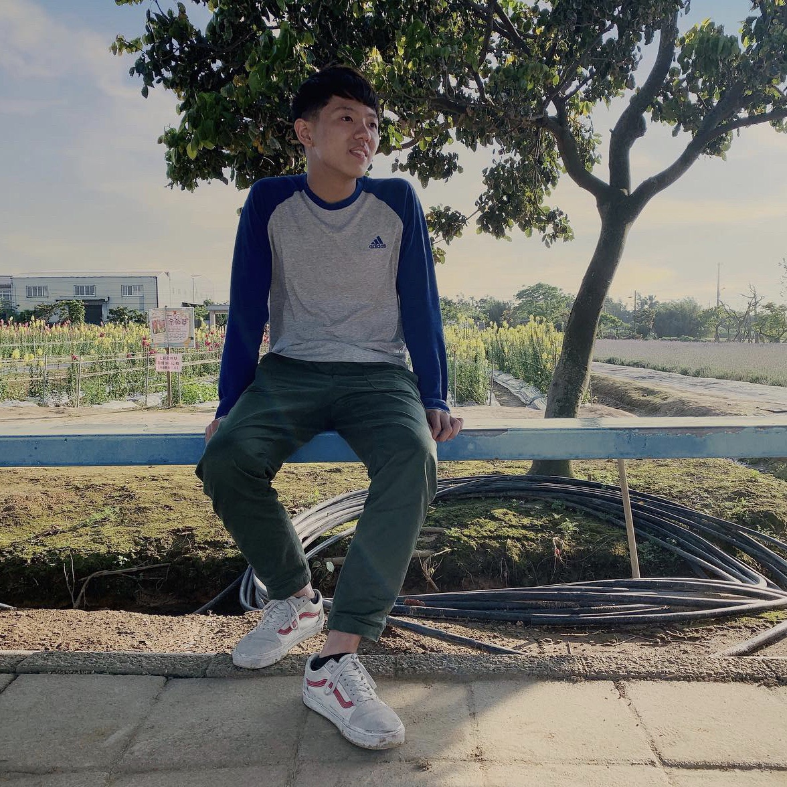
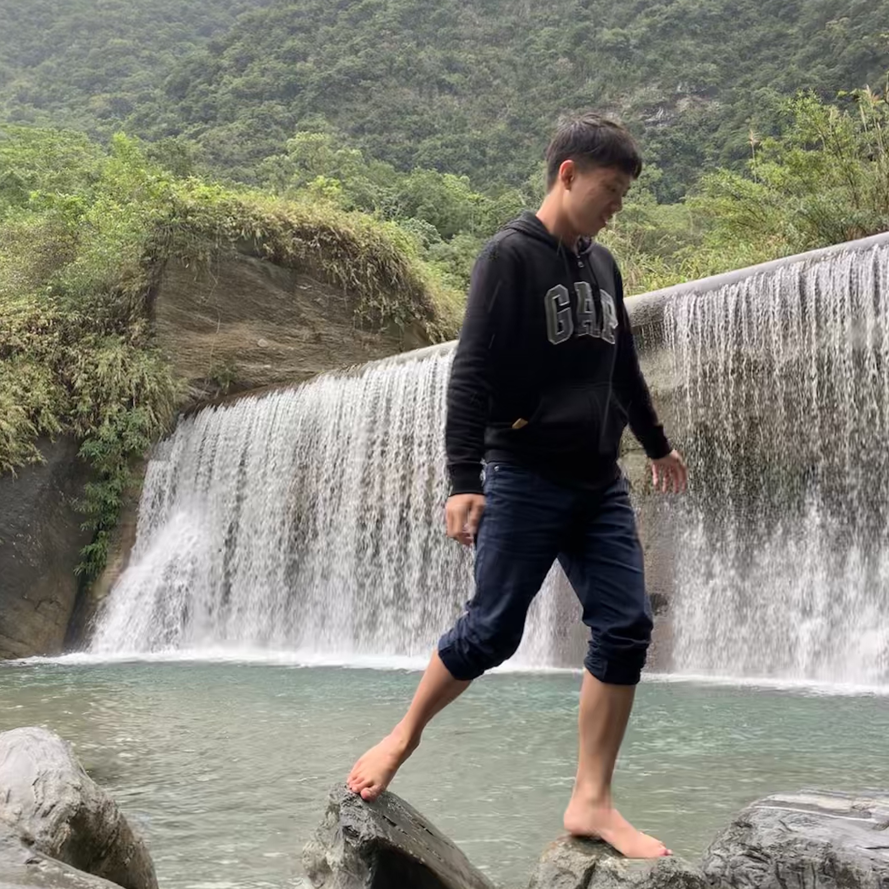

- Education Background
-
姓名:蔡 敬 Jing Tsai
目前就讀:電子工程學系 四年級
輔系:資訊管理學系


- Social Activity
-
愛鄰社志工服務
愛鄰社是一個在中壢地區的基督教服務性團體，專門提供一些服務給在中壢地區家庭較特殊的中小學生， 課業上的輔導或行為上的正確觀念糾正，而在大一時我很榮幸選到了林雄堅老師的宗教哲學，而愛鄰社就是 老師一手創辦的，當下毅然決然地就決定要加入服務組，陪伴這些家庭有特殊狀況的中學生。
大同國小服務學習營
在大一時的寒假參加了系上舉辦的小學營活動，能參與這個活動並且帶給小朋友歡樂我感到很容榮幸，這也是我第一次在小朋友的面前帶活動，籌辦的過程中我學到要如何跟組員溝通、協調，還有如何才能呈現最好的一面給大家。
自動控制研習社
在大二的暑假我參與了自動控制研習社的暑期訓練營，當中我認識了許多相似背景的同學，一個月的期間經由社團的教學幹部教導，我學了許多軟體應用，像是SolidWork、Arduino等等課程，後來與大家相處融洽，因此也當上了社團行政幹部，幫忙處理許多社團相關的大小事。
- Award
-
- 104學年度上、下學期:書卷獎
- 105學年度上、下學期:書卷獎
- 106學年度上、下學期:書卷獎
- 104學年度上學期:學科優異-普物(一)
- 105學年度上學期:學科優異-電路學(二)
- 105學年度上學期:學科優異-訊號與系統
- 106學年度上學期:學科優異-電磁學(一)
- 106學年度上學期:學科優異-net程式設計
- Interest
-
- 運動、游泳、登山:努力不懈、永不放棄的精神
- 關心國際議題、時事:培養國際觀及宏觀的視野
- 彈鋼琴:沉浸在音樂的世界裡暫時遠離煩惱
- Goal
-
座右銘:沒有目標的人生就像沒有羅盤的航行。
- 研究所順利畢業並且進入台積電
- Self-Expectation
-
- 希望自己遇到任何的困難、挫折都能永不放棄，並且隨時保持謙卑的態度從中學習。
- 希望能在大學時期多結交各個領域的朋友，擴展人脈。
- Life Record          